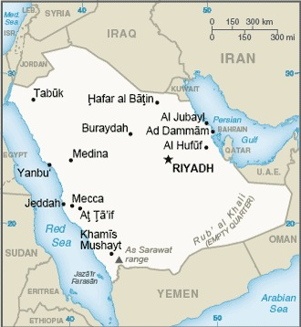

Genel Bilgiler
Suudi Arabistan, Orta Doğu’da yer alan mutlak monarşi ile yönetilen bir ülkedir. Başkenti Riyad’dır. Yaklaşık 36 milyon nüfusa sahiptir. Resmî dili Arapça’dır ve para birimi Suudi Riyali (SAR)’dır. Suudi Arabistan, İslam’ın doğduğu yer olması nedeniyle dini ve kültürel öneme sahiptir ve OPEC üyesidir.
Suudi Arabistan, kuzeyde Ürdün ve Irak, doğuda Kuveyt, Katar, Birleşik Arap Emirlikleri ve Basra Körfezi, güneyde Umman ve Yemen ile çevrilidir. Yüzölçümü yaklaşık 2.149.690 km²’dir. Ülke coğrafyası büyük çöller, plato ve dağlık alanlardan oluşur; önemli bölgeleri Necef ve Rub’ül Hali çölleridir.
Başkent: Riyad
Kıta: Orta Doğu ve Kuzey Afrika
Yüzölçümü: 2.149.690 km²
Nüfus (2025): 35.000.000

Bayrak Anlamı: Suudi Arabistan bayrağı yeşil zemin üzerinde beyaz Arapça yazılı İslam şehadeti ve alt kısmında beyaz bir kılıç içerir. Yeşil İslam’ı ve bereketi, şehadet dini inancı ve birliği, kılıç ise adaleti ve gücü simgeler. Bayrak 1973 yılında kabul edilmiştir.
Suudi Arabistan Haritası
Ekonomi
Suudi Arabistan ekonomisi büyük ölçüde petrol ve doğal gaz ihracatına dayanır; enerji sektörü ekonominin temelini oluşturur. Tarım sınırlı olup hurma ve bazı tahıl üretimi yapılmaktadır. Sanayi sektöründe petrol rafinerileri ve petrokimya öne çıkar. Hizmet sektörü finans, ticaret ve turizm alanlarında gelişmektedir. Ülke, Orta Doğu’nun enerji ve ekonomik açıdan en etkili ülkelerinden biridir.
| Yıl | İhracat (Milyar $) | İthalat (Milyar $) |
|---|---|---|
| 2019 | 252 | 104 |
| 2020 | 193 | 83 |
| 2021 | 309 | 137 |
| 2022 | 348 | 170 |
| 2023 | 360 | 180 |